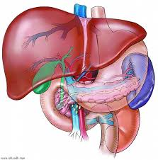

यकृत

यकृत अधिकांश जीव जंतुओं के शरीर का आवश्यक अंग हैं। इस लेख में मानव शरीर से संबंधित उल्लेख है। यकृत मनुष्य के शरीर में पाई जाने वाली सबसे बड़ी तथा महत्त्वपूर्ण पाचक ग्रन्थि होती है। यह उदरगुहा के दाहिने ऊपरी भाग में डायाफ्राम के ठीक नीचे स्थित होता है तथा आन्त्रयोजनीयों द्वारा सधा रहता है। यह लाल–भूरे रंग का बड़ा, कोमल, ठोस तथा द्विपालित अंग होता है। दोनों पालियाँ बहुभुजीय पिण्डकों से बनी होती हैं। इनके चारों ओर संयोजी ऊतकों का आवरण होता है जिसे ग्लीसन कैप्सूल कहते हैं।
यकृत पिण्डक यकृत कोशिकाओं से बने होते हैं, इनसे पित्त का स्रावण होता है। पित्त पित्ताशय में संग्रहित होता रहता है। पित्त में पाचक एन्जाइम नहीं पाए जाते हैं, लेकिन यह फिर भी पाचन में सहायता करता है।
यकृत के कार्य
यकृत के निम्नलिखित महत्त्वपूर्ण कार्य हैं-
- पित्त रस का स्रावण- यकृत पित्त रस का स्रावण करता है। इसकी प्रकृति क्षारीय होती है। इसमें पित्त लवण, कोलेस्ट्राल, वर्णक कोशिकाएँ पाई जाती हैं।
- भोजन के माध्यम को क्षीरीय बनाता है।
- वसा का इमल्सीकरण करता है।
- हानिकारक जीवाणुओं को नष्ट करके भोजन को सड़ने से बचाता है।
- पित्त वर्णक, लवण आदि पदार्थों को उत्सर्जित करता है।
- ग्लाइकोजिनेसिस- आवश्यकता से अधिक ग्लुकोज का संचय ग्लाइकोजन के रूप में करता है। यह प्रक्रिया ग्लाइकोजिनेसिस कहलाती है।
- ग्लूकोजीनोलाइसिस- रुधिर में ग्लूकोज़ की मात्रा कम होने पर यकृत कोशिकाएँ ग्लाइकोजन को पुनः ग्लूकोज़ में बदल देती हैं। यह प्रक्रिया ग्लूकोनियोजिनेसिस कहलाती है।
- ग्लाइकोनियोजिनेसिस- आवश्यकता पड़ने पर यकृत कोशिकाओं के द्वारा अमीनों अम्लों तथा वसीय अम्लों से ग्लूकोज़ का निर्माण किया जाता है। इस क्रिया को ग्लाइकोनियोजिनेसिस कहते हैं।
- वसा एवं विटामिन्स का संश्लेषण- यकृत कोशिकाएँ वसा तथा विटामिन्स का संश्लेषण एवं संचय का कार्य करती है।
- एन्जाइम का स्राव करना
- विटामिन्स का संचय
- डीएमीनेशन
- यूरिया का संश्लेषण
- उत्सर्जी पदार्थो का निष्कासन
- विषाक्त पदार्थों का विषहरण
- रुधिराणुओं का निर्माण एक विखण्डन
- अकार्बनिक पदार्थों का संश्लेषण
- रुधिर प्रोटीन का संश्लेषण
- हिपैरिन का स्रावण
- जीवाणुओं का भक्षण
- लसीका उत्पादन, संचय